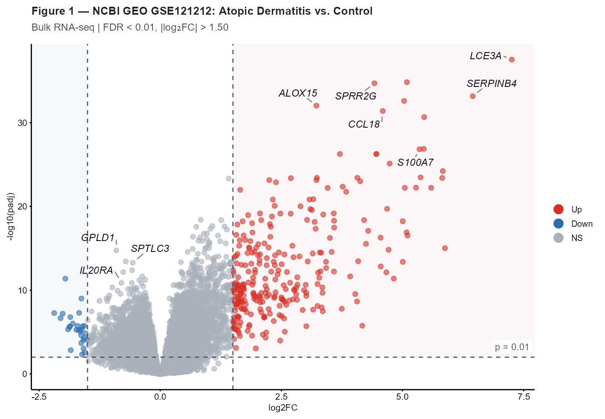
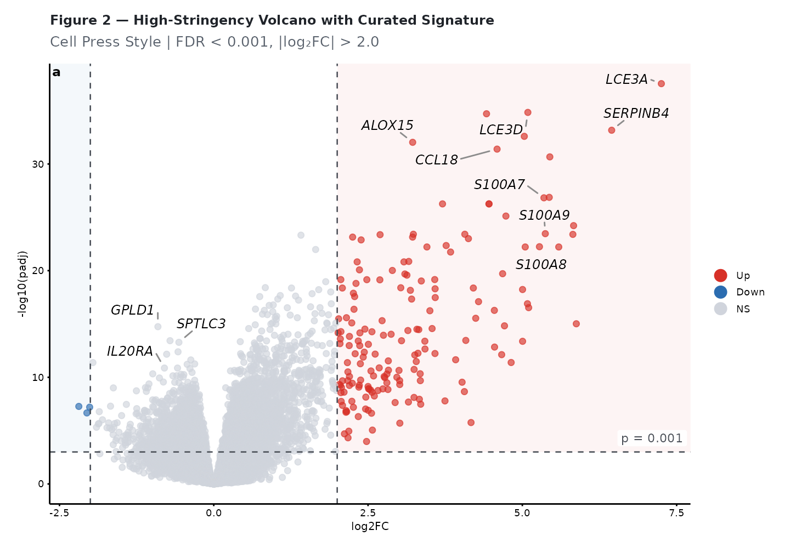
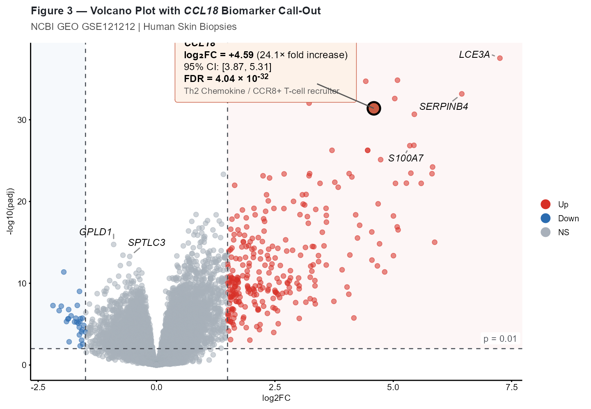

Differential Expression Volcano Plots with GEO Datasets
Lucas VHH Tran
2026-11-20
Source:vignettes/volcano-plot.Rmd
volcano-plot.RmdOverview
The volcano plot is the standard visualisation for genome-wide differential expression experiments, plotting statistical significance () against effect size ().
This vignette demonstrates publication-ready volcano plotting using
human skin RNA-seq data from NCBI GEO accession
GSE121212 (Atopic Dermatitis vs. Healthy Control skin
biopsies). All figures use the type_volcano() constructor
within cliplot(), illustrating default cutoffs, curated
gene signatures, and rich annotation call-outs.
1. Real GEO Dataset: GSE121212 (Atopic Dermatitis vs. Healthy Skin)
The dataset comes from NCBI GEO accession GSE121212:
- Cohort: Full-thickness skin biopsies from patients with active Atopic Dermatitis () and healthy control individuals ().
- Platform: Illumina HiSeq 2500 high-throughput RNA sequencing.
-
Differential Expression: DESeq2 negative binomial
generalized linear model with Wald significance testing and
Benjamini-Hochberg false discovery rate (
padj) control. -
Gene Coverage: 20,140 tested genes with
baseMean,log2FC,lfcSE,stat,pvalue, andpadj.
# Helper to resolve bundled dataset
resolve_data = function(filename) {
pkg_path = system.file("extdata", filename, package = "cliomicplot")
if (pkg_path != "" && file.exists(pkg_path)) return(pkg_path)
fallback = file.path("..", "inst", "extdata", filename)
if (file.exists(fallback)) return(fallback)
fallback2 = file.path("inst", "extdata", filename)
if (file.exists(fallback2)) return(fallback2)
stop("Cannot locate ", filename)
}
de_results = readRDS(resolve_data("geo_gse121212_de.rds"))
# Inspect top differentially expressed genes
head(de_results[, c("gene", "baseMean", "log2FC", "lfcSE", "pvalue", "padj")])
#> gene baseMean log2FC lfcSE pvalue padj
#> LCE3A LCE3A 379.15 7.2524 0.5304 1.456015e-42 2.932414e-38
#> LCE3D LCE3D 2310.00 5.0891 0.3866 1.448727e-39 1.458868e-35
#> SPRR2G SPRR2G 5974.80 4.4195 0.3371 2.921422e-39 1.961248e-35
#> SERPINB4 SERPINB4 12719.18 6.4473 0.5031 1.360674e-37 6.850992e-34
#> LCE3E LCE3E 805.96 5.0317 0.3964 6.365667e-37 2.564091e-33
#> ALOX15 ALOX15 94.50 3.2228 0.2562 2.771743e-36 9.303816e-33Across the 20,140 tested genes, 1,189 meet stringent significance criteria ( and ), with 812 genes upregulated and 377 downregulated in atopic skin.
2. Quick Volcano Plot: One Call
cliplot() accepts the standard formula
y ~ x, where the y-axis specifies significance
()
and the x-axis specifies effect size
():
cliplot(-log10(padj) ~ log2FC, data = de_results,
type = type_volcano(
pval_cutoff = 0.01,
fc_cutoff = 1.5,
point_size = 1.8,
point_alpha = 0.60,
label_genes = c("SERPINB4", "CCL18", "S100A7", "LCE3A", "SPRR2G",
"ALOX15", "GPLD1", "IL20RA", "SPTLC3"),
max_overlaps = 25
),
palette = "nature",
theme = "nature",
title = "**Figure 1** — NCBI GEO GSE121212: Atopic Dermatitis vs. Control",
subtitle = "Bulk RNA-seq | FDR < 0.01, |log₂FC| > 1.50") +
cli_markdown()
This single command coordinates: - Classification into
Up (red), Down (blue), and
NS (grey). - Threshold reference lines at
and
.
- Automatic ggrepel label positioning with collision
avoidance. - Nature-style open axes without top and right spines.
Biological Findings in GSE121212
- Epidermal Differentiation Complex (EDC): Strongly upregulated genes include LCE3A (, ), LCE3D (), SPRR2G (), and S100A7 (, psoriasin).
- Th2 Immune Activation: SERPINB4 (, squamous cell carcinoma antigen 2) and CCL18 (, dendritic cell-derived chemokine).
- Downregulated Barrier Components: SPTLC3 (, serine palmitoyltransferase required for ceramide synthesis) and GPLD1 (, glycosylphosphatidylinositol-specific phospholipase D1).
3. Customising Parameters & Curated Disease Signatures
type_volcano() provides complete control over
thresholds, colors, point transparency, and background shading:
# Curated Th2 inflammatory and barrier signature
signature_genes = c("CCL18", "SERPINB4", "S100A7", "S100A8", "S100A9",
"LCE3A", "LCE3D", "ALOX15", "IL20RA", "SPTLC3", "GPLD1")
cliplot(-log10(padj) ~ log2FC, data = de_results,
type = type_volcano(
pval_cutoff = 0.001,
fc_cutoff = 2.0,
point_size = 1.7,
point_alpha = 0.65,
up_color = "#D73027",
down_color = "#2B6CB0",
ns_color = "#D0D4DC",
label_genes = signature_genes,
max_overlaps = 30,
cutoff_region_alpha = 0.05,
show_threshold_labels = TRUE
),
theme = "cell",
title = "**Figure 2** — High-Stringency Volcano with Curated Signature",
subtitle = "Cell Press Style | FDR < 0.001, |log₂FC| > 2.0") +
cli_markdown() +
cli_panel_label("a")
Setting label_genes to an explicit character vector
restricts labeling to hypotheses of interest, avoiding overcrowded text
in dense datasets.
4. Biomarker Annotation Call-Out Box
Manuscript figures frequently highlight one or two lead candidate biomarkers with an annotation card reporting exact effect sizes, confidence intervals, and multiple-testing adjusted statistics.
Here, we annotate CCL18, a validated serum and tissue biomarker of atopic dermatitis severity:
# Extract statistics for CCL18
highlight = de_results["CCL18", ]
highlight$ci_low = round(highlight$log2FC - 1.96 * highlight$lfcSE, 2)
highlight$ci_high = round(highlight$log2FC + 1.96 * highlight$lfcSE, 2)
highlight$fold_change = round(2^highlight$log2FC, 1)
highlight$annot = paste0(
"<b><i>", highlight$gene, "</i></b><br>",
"<b>log₂FC = +", round(highlight$log2FC, 2), "</b> (", highlight$fold_change, "× fold increase)<br>",
"95% CI: [", highlight$ci_low, ", ", highlight$ci_high, "]<br>",
"<b>FDR = 4.04 × 10<sup>-32</sup></b><br>",
"<span style='font-size:8pt;color:#555;'>Th2 Chemokine / CCR8+ T-cell recruiter</span>"
)
# Base volcano plot
p_base = cliplot(-log10(padj) ~ log2FC, data = de_results,
type = type_volcano(
pval_cutoff = 0.01,
fc_cutoff = 1.5,
point_size = 1.8,
point_alpha = 0.55,
label_genes = c("SERPINB4", "S100A7", "LCE3A", "ALOX15", "GPLD1", "SPTLC3"),
max_overlaps = 20
),
palette = "nature", theme = "nature",
title = "**Figure 3** — Volcano Plot with *CCL18* Biomarker Call-Out",
subtitle = "NCBI GEO GSE121212 | Human Skin Biopsies") +
cli_markdown()
# Layer call-out box and leader segment
p_annot = p_base +
geom_point(
data = highlight,
aes(x = log2FC, y = -log10(padj)),
inherit.aes = FALSE,
shape = 21, size = 4.5, stroke = 1.3,
fill = "#C95C43", colour = "black"
) +
geom_richtext(
data = highlight,
aes(x = log2FC - 4.2, y = -log10(padj) + 5, label = annot),
inherit.aes = FALSE,
hjust = 0, vjust = 0.5,
size = 3.2, fill = "#FDF2E9", colour = "black",
label.colour = "#C95C43", label.padding = grid::unit(c(6, 8, 6, 8), "pt")
) +
geom_segment(
data = highlight,
aes(x = log2FC, y = -log10(padj),
xend = log2FC - 1.2, yend = -log10(padj) + 3),
inherit.aes = FALSE,
linewidth = 0.5, colour = "#555555"
)
p_annot
5. Using External GEO and DESeq2 Results
To apply type_volcano() to other NCBI GEO datasets or
custom differential expression pipelines (DESeq2, edgeR, limma):
-
Required Columns: Ensure your data frame contains a
log2 fold change column (
log2FC) and an adjusted significance column (padj). -
Gene Symbols: Assign gene symbols to
rownames(df)or agenecolumn. - P-Value Floor: Cap extreme floating-point zeros to prevent infinite values on the scale:
# Typical loading script for external GEO data
# res = read.csv("GSEXXXXX_differential_expression.csv", row.names = 1)
# res$padj = pmax(res$padj, 1e-300)
# cliplot(-log10(padj) ~ log2FC, data = res,
# type = type_volcano(pval_cutoff = 0.05, fc_cutoff = 1.0),
# theme = "nature")6. Journal Export & Physical Trim Dimensions
cli_journal_size() returns publisher print dimensions in
millimeters. Figures can be exported directly to target column widths
using cli_save():
# Check Nature single-column width (89 mm)
cli_journal_size("nature", "single")
# Save as vector PDF conforming to Nature single-column width
cli_save(p_annot, "Figure_3_GSE121212.pdf", journal = "nature", column = "single")
# Save double-column layout for multi-panel assembly
cli_save(p_annot, "Figure_3_GSE121212_double.svg", journal = "cell", column = "double")Summary
| Parameter / Feature | Description | Default |
|---|---|---|
pval_cutoff |
Significance cutoff on adjusted p-value | 0.05 |
fc_cutoff |
Absolute threshold |
1.0 (2-fold) |
label_genes |
Vector of gene symbols, "significant", or
NULL
|
NULL |
max_overlaps |
Maximum overlapping labels before hiding (ggrepel) |
25 |
cutoff_region_alpha |
Transparency of shaded significance quadrant rectangles | 0.045 |
up_color / down_color
|
Hex codes for directional significance classes |
#D73027 / #2B6CB0
|
ns_color |
Color for non-significant genes | #A8B0BA |